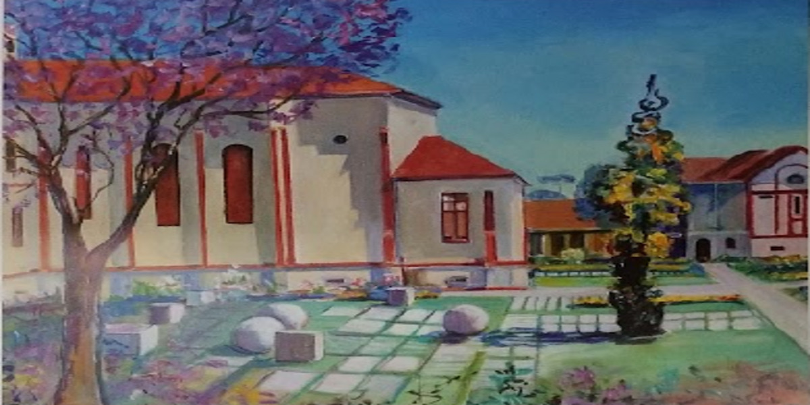
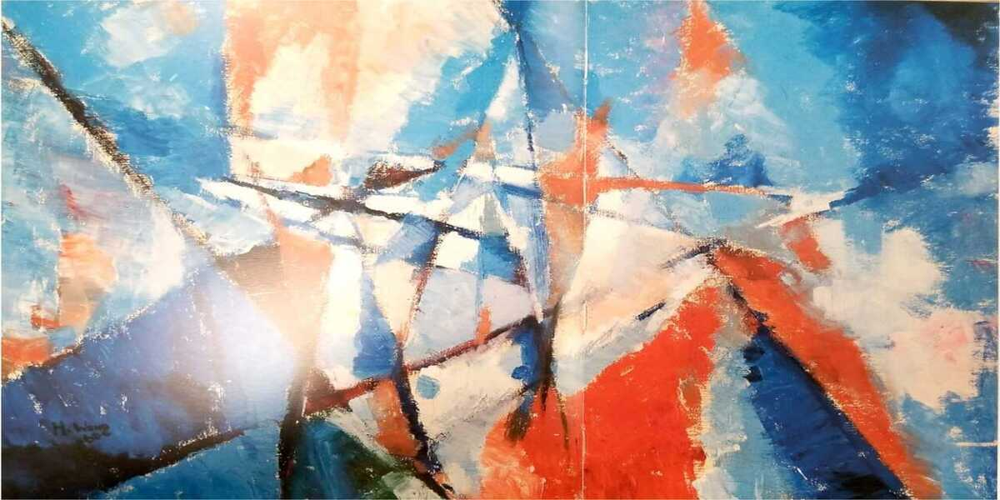
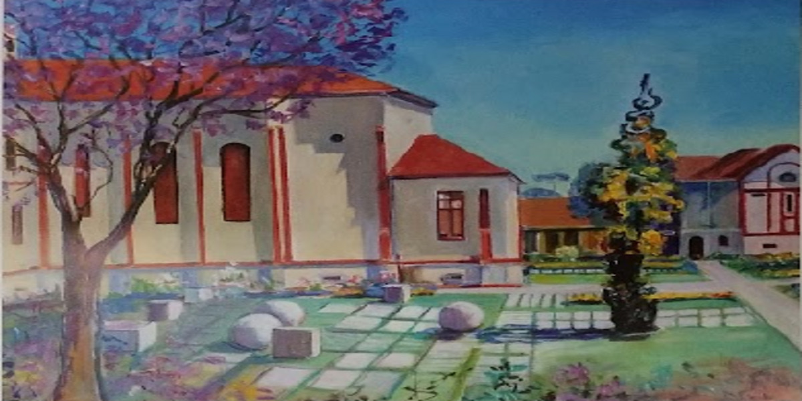
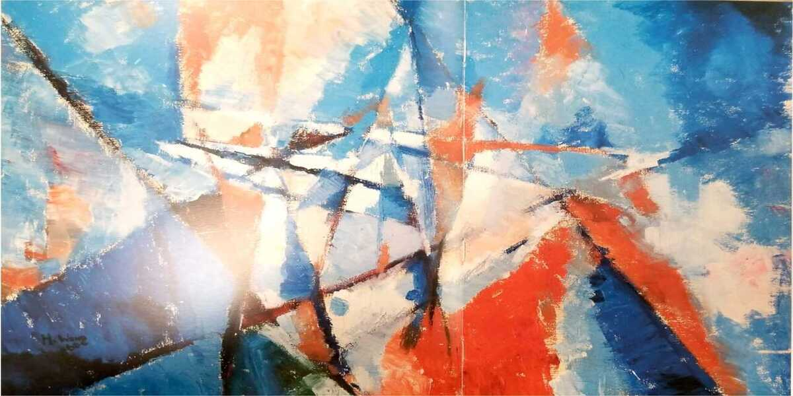

Missão
Documentar e preservar a história das artistas paranaenses, garantindo que suas contribuições sejam reconhecidas e valorizadas.
Equipe
Projeto desenvolvido por pesquisadores e estudantes comprometidos com a preservação da cultura paranaense.
Acervo
Coleção em constante expansão com biografias, obras e histórias de artistas mulheres do Paraná.